1. Visualizing Training and Sampling
In flow matching, I linearly interpolate between standard Gaussian noise $\epsilon \sim \mathcal{N}(0, I)$ and a clean image $x_1$ across timesteps $t \in [0, 1]$.
I took a natural photo of a building and created a series of noisy images by linearly interpolating between standard Gaussian noise $\epsilon \sim \mathcal{N}(0, I)$ and the clean image \(x_1\) across timesteps $t \in [0, 1]$. The photograph was center-cropped, resized to $512 \times 512$, and its RGB values were scaled to $[-1, 1]$. At $t = 0$, the result is pure noise, while at $t = 1$, the original clean image is recovered. Each intermediate image is calculated as $(1 - t)\epsilon + tx_1$, using the same sampled noise image throughout the process. As $t$ decreases, the noise becomes more dominant, and the building becomes harder to recognize. Keeping the noise fixed makes it easier to compare the images because only the interpolation weights change.
1.1 Constructing Noisy Training Inputs
To construct noisy training inputs, I sample independent Gaussian noise $\epsilon \sim \mathcal{N}(0, I)$ and interpolate it with a clean photograph center-cropped and resized to $512 \times 512$ with RGB values scaled to $[-1, 1]$. At $t = 0$ the output is pure noise, whereas at $t = 1$ I recover the clean image.
def interpolate(image, noise, t):
return (1 - t) * noise + t * image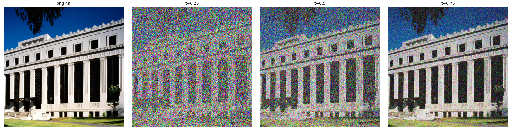
Discussion: Reusing the exact same noise tensor $\epsilon$ across all timesteps makes it clear how increasing $t$ preserves progressively more structure from the clean photograph. At $t = 0.25$, high-frequency visual information is dominated by noise variance, whereas by $t = 0.75$, the primary architectural features of the building become clearly visible.
1.2 Classical Denoising
As a baseline without a learned flow model, I attempted classical denoising using Gaussian blur. Because the clean image contribution in $x_t$ is scaled by $t$, directly blurring $x_t$ would yield a dimmed result. Therefore, I first restore the image amplitude by dividing by $t$ before applying the Gaussian filter $G_\sigma$:
Dividing by $t$ ensures the clean image component $x_1$ has unit weight, but it also scales up the noise variance by $\frac{1-t}{t}$. At low noise levels ($t = 0.75$), a light blur ($\sigma = 1.0$) suffices to remove residual noise while preserving sharp building details. At high noise levels ($t = 0.25$), a heavy blur ($\sigma = 4.0$) is required to suppress high noise variance, though it removes sharp high-frequency edges of the VLSB library in the process.
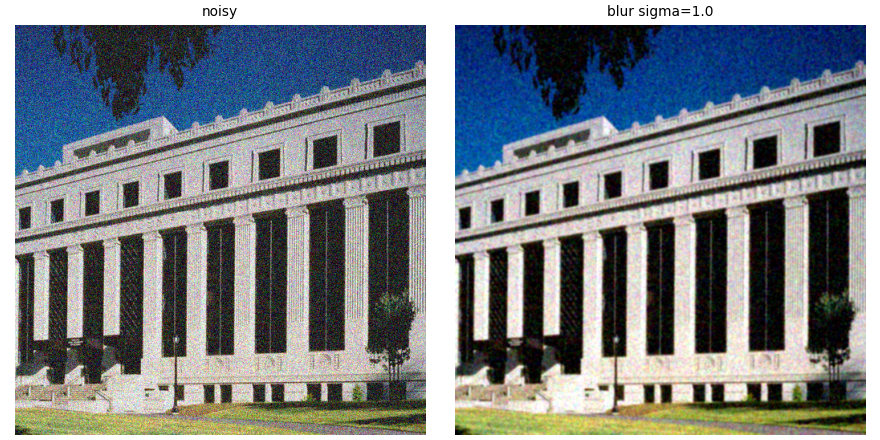
Selected $\sigma = 1.0$ (Lightest Blur)
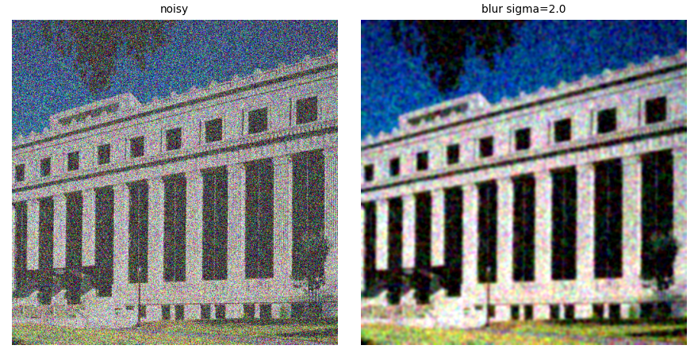
Selected $\sigma = 2.0$ (Medium Blur)
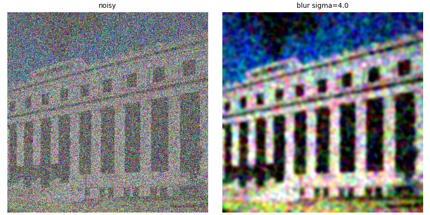
Selected $\sigma = 4.0$ (Heaviest Blur)
Discussion: Gaussian noise is zero-mean, so spatial averaging via convolution reduces noise variance across nearby pixels. However, because blurring operates indiscriminately on all high frequencies, it smooths out essential architectural contours alongside the noise. Classical linear filtering highlights the need for deep generative flow models that can denoise while hallucinating realistic high-frequency detail.
1.3 One-Step Denoising
Now I use the pretrained PixNerd flow model to denoise the noisy images.
Given a noisy image state $x_t$, the function predict_velocity(x, t, condition) predicts the path velocity vector $v_\theta(x_t, t, c)$ using the prompt embedding $c$ for "a high quality photo".
Because the optimal-transport flow matching formulation defines a straight trajectory from noise to target, I can extrapolate directly to the clean endpoint $t = 1$ in a single step:
def one_step_denoise(x, t, condition, predict_velocity):
return x + (1 - t) * predict_velocity(x, t, condition)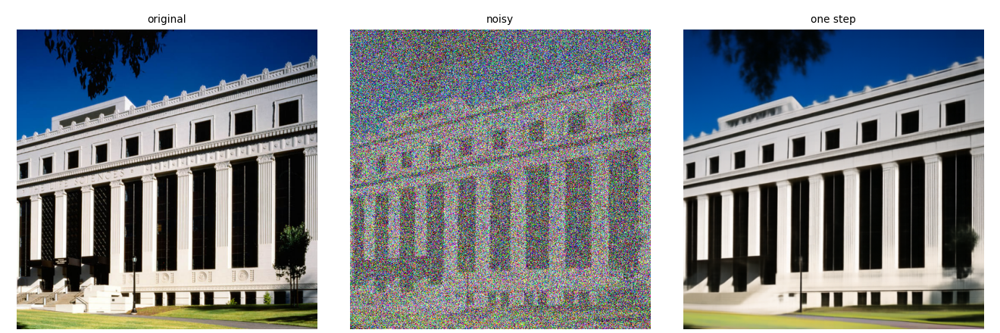
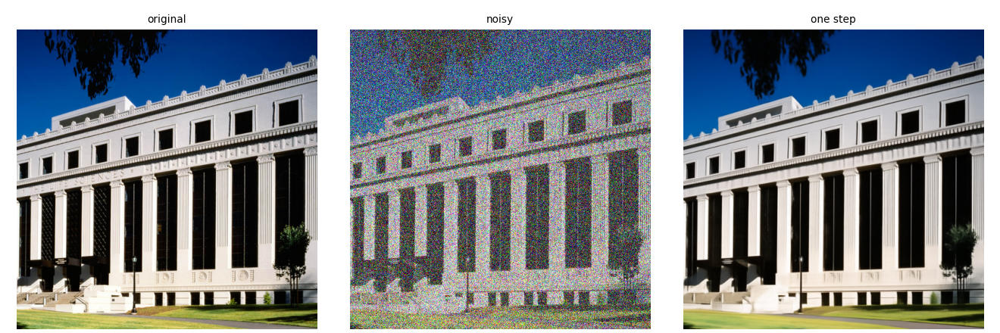
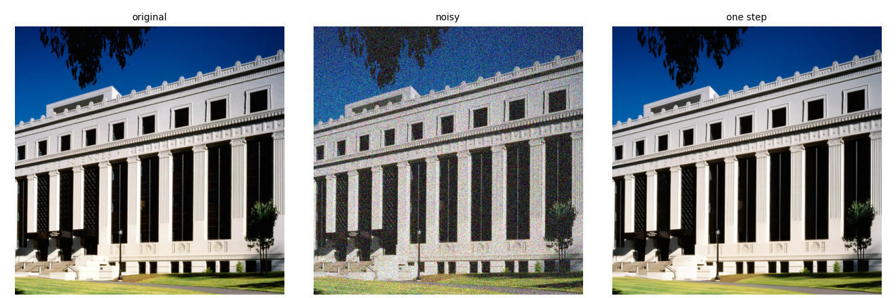
Discussion: Compared to classical Gaussian blurring, the learned flow model recovers significantly sharper architectural features and realistic surface textures of the VLSB library. However, when extrapolating across a large time step from $t = 0.25$, the single linear step results in slight over-smoothing along edge boundaries because actual learned flow trajectories are curved. Recomputing velocity at smaller intermediate timesteps will resolve this approximation error.
1.4 Visualizing Velocity
In Section 1.3, I added $(1 - t)\hat{v}$ to the noisy image to estimate the clean image. Here, I visualize the exact updates added by the model and compare them against the ground-truth target updates.
Since I know the original clean image $x_1$ and the sampled noise $\epsilon$, the true target velocity is $v_{\text{gt}} = x_1 - \epsilon$. Multiplying by $(1 - t)$ yields the exact ground-truth update needed to recover $x_1$:
To quantify where the model's velocity prediction differs most from the target update, I compute a per-pixel Root Mean Square (RMS) error across the RGB channels:
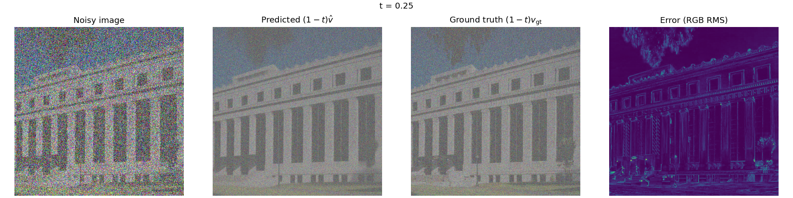
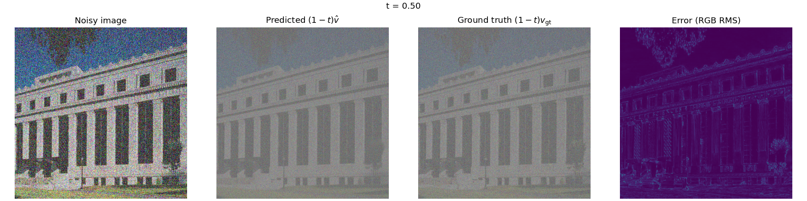
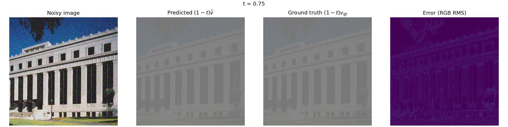
Discussion: Analyzing the error heatmaps reveals that prediction error is highest at $t = 0.25$ and consistently concentrated along sharp architectural boundaries, window frames, and high-frequency edges of the VLSB library. As $t$ increases to $0.75$, the magnitude of $(1 - t)$ shrinks, and the model's velocity estimate aligns much more closely with the ground-truth update, resulting in significantly lower RMS error across the whole image canvas.
1.5 Iterative Denoising with Euler Sampling
One-step denoising can be inaccurate because the learned velocity field changes non-linearly as the image moves along the path. To achieve more accurate reconstruction, I take small numerical steps, recompute the velocity prediction at each intermediate state, and integrate forward using Euler updates:
Starting from the saved noisy VLSB library image at $t = 0.50$, I run $25$ Euler steps using step size $h = 0.02$. If the step size does not divide $(1 - t_{\text{start}})$ evenly, I shorten the final integration step so that sampling terminates exactly at $t = 1.0$. I verified the implementation analytically on a constant velocity field $v(x, t) = 1$, ensuring the final state equaled $x_{\text{start}} + (1 - t_{\text{start}})$.
@torch.inference_mode()
def euler_sample(x_start, t_start, step_size, velocity):
x = x_start
t = t_start
num_steps = math.ceil(round((1 - t_start) / step_size, 6))
states = [(t, x)]
for i in range(1, num_steps + 1):
t_next = 1.0 if i == num_steps else t_start + i * step_size
x = x + (t_next - t) * velocity(x, t)
t = t_next
if i % 5 == 0 or i == num_steps:
states.append((t, x))
return x, statesSampling Trajectory
Below is the full 25-step trajectory starting from $t = 0.50$ through $t = 1.00$, displaying intermediate states at every step:
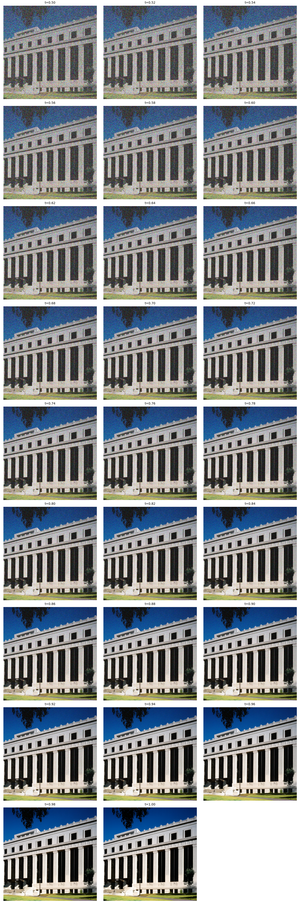
Denoising Method Comparison
I evaluated all three denoising approaches on the exact same $t = 0.50$ noisy input:
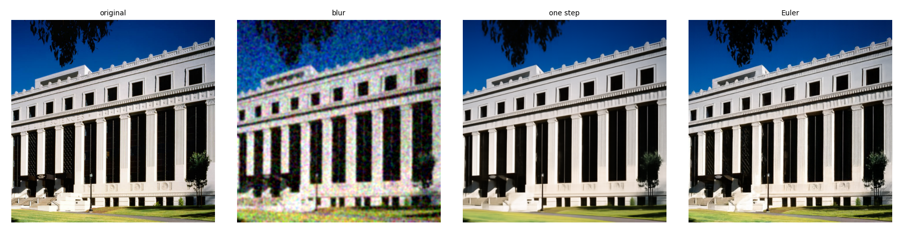
Discussion: Gaussian blur merely smooths out the high-frequency noise variance while blurring out the window columns and architectural relief. While one-step denoising yields a clean picture, it produces slightly smooth, averaged details along fine edges. Iterative Euler integration follows the curving velocity field step by step, recovering significantly sharper window moldings, crisp stone textures, and detailed foliage across the building façade.
1.6 Generating Images from Noise
In Section 1.5, I used the flow model to denoise an existing photograph.
Beyond editing real inputs, I can also generate images entirely from scratch using the same euler_sample integration function by setting $t_{\text{start}} = 0$ and passing pure Gaussian noise $x_0 \sim \mathcal{N}(0, I)$.
I generated 5 images starting from random noise tensors across seeds 180 to 184, running Euler sampling up to $t = 1.0$ conditioned on the generic text prompt "a high quality photo".

Discussion & Observations: The generic prompt "a high quality photo" strongly biases the model toward human portraits[cite: 14]. Without guidance, the unconditional sampling quality is noticeably inconsistent and prone to anatomical artifacts:
- Seed 180: Fails to render facial features entirely, leaving a smooth blank face[cite: 14].
- Seed 181: Generates a human torso and head, but exhibits distorted skin texture and unnatural shoulders[cite: 14].
- Seed 182: Produces a fairly clear woman's portrait, though slightly soft[cite: 14].
- Seed 183: Yields a heavily distorted, texture-melted figure[cite: 14].
- Seed 184: Results in the cleanest and most realistic man's portrait among the set[cite: 14].
These results illustrate that standard unguided sampling from a general text prompt struggles with prompt alignment and visual consistency. In Section 2, I explore Classifier-Free Guidance (CFG) to resolve these issues.
2.1 Classifier-Free Guidance (CFG)
As observed in Section 1.6, unguided generation often yields distorted faces and poor prompt alignment[cite: 14]. To improve image quality and adhere more strongly to the text prompt, I implement Classifier-Free Guidance (CFG)[cite: 14].
At each step, I evaluate two velocity predictions using the same image state $x_t$ and timestep $t$: a conditional prediction $v_c = v_\theta(x_t, t, c)$ using the prompt "a high quality photo", and an unconditional prediction $v_u = v_\theta(x_t, t, \emptyset)$ using an empty-string prompt $c_{\text{uncond}} = \text{""}$[cite: 14]. I then combine them using guidance scale $w = 7.0$:
When $w = 0$, this formula reduces exactly to plain conditional velocity $v_c$[cite: 14]. Setting $w > 0$ extrapolates away from the unconditional prediction toward the prompt direction[cite: 14].
def cfg_velocity(x, t, condition, w, predict_velocity, null_condition=""):
vc = predict_velocity(x, t, condition)
nc = predict_velocity(x, t, null_condition)
return vc + w * (vc - nc)
Discussion & Comparison with Section 1.6:
- Quality & Clarity: Applying CFG dramatically boosts image fidelity[cite: 14]. The distorted or faceless outputs from Section 1.6 (such as the melted features in Seed 180 and Seed 183) are transformed into crisp, in-focus human headshots with clear facial details and studio lighting[cite: 14].
- Diversity Trade-Off: While quality improves, output diversity decreases noticeably[cite: 14]. All five samples converge toward formal, front-facing studio portraits against plain backgrounds[cite: 14].
- Noise Spatial Preservation: The underlying spatial layout remains anchored to the initial noise seed[cite: 14]. For example, Seed 182 retains the pose with a hand positioned near the jawline in both unguided and guided versions[cite: 14].
3.1 Image-to-Image Editing (SDEdit)
In Section 1.5, I added noise to a clean photograph and ran iterative Euler sampling to denoise it. Following the SDEdit algorithm, this process can be leveraged for creative image editing: by taking an existing photograph, adding noise up to a starting timestep $t_{\text{start}}$, and using Classifier-Free Guidance ($w = 7.0$, step size $h = 0.02$) with the prompt "a high quality photo", the flow model is forced to project the noisy representation back onto the natural image manifold.
The starting noise level $t_{\text{start}}$ directly controls the edit distance:
- Low $t_{\text{start}}$ (e.g., $0.02 \le t_{\text{start}} \le 0.06$): The image is heavily corrupted by noise. The flow model has high creative freedom, hallucinating completely new structures while only preserving coarse color or composition cues.
- High $t_{\text{start}}$ (e.g., $0.25 \le t_{\text{start}} \le 0.50$): More of the original image structure is retained, so the model only refines textures, cleans up fine details, and stays very faithful to the original target.
Campanile Edits

Observations (Campanile): At low starting times ($t_{\text{start}} = 0.02$ to $0.06$), the model replaces the architectural tower with abstract smooth cones and obelisk-like structures. As $t_{\text{start}}$ increases to $0.10$ and $0.14$, the tower form emerges without the clock face or intricate stone moldings. By $t_{\text{start}} = 0.50$, the original clock, stone textures, and surrounding trees are restored almost identically.
Custom Image 1: VLSB Berkeley Library
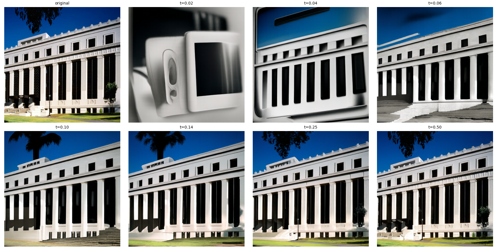
Observations (VLSB Library): At $t_{\text{start}} = 0.02$, the extreme noise causes the model to hallucinate an abstract indoor display monitor or slide frame. At $t_{\text{start}} = 0.04$ and $0.06$, it interprets the dark vertical window stripes as modern architectural louvers or building facades. By $t_{\text{start}} \ge 0.25$, the full classical facade of the VLSB library, complete with its grand columns, window panes, and front lawn, is reconstructed cleanly.
Custom Image 2: Jack-o'-lantern Pumpkin
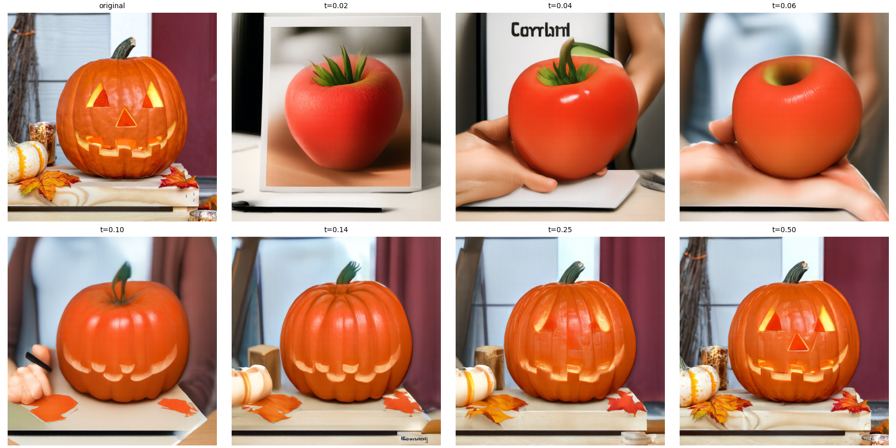
Observations (Pumpkin / Tomato Transformation): At very low timesteps ($t_{\text{start}} = 0.02$ to $0.06$), the model completely ignores the carved face and transforms the round orange object into a smooth red tomato held in hands or framed on a table. As $t_{\text{start}}$ increases to $0.10$ and $0.14$, the smooth tomato transitions back into an uncarved orange pumpkin. By $t_{\text{start}} = 0.25$ and $0.50$, the carved Jack-o'-lantern glowing facial features and surrounding Halloween background decor are fully recovered.
3.1 Editing Hand-Drawn and Web Images
The SDEdit image-to-image pipeline is particularly effective when projecting non-realistic inputs—such as web illustrations, sketches, or hand-drawn doodles—onto the manifold of realistic natural images. Using the same configuration ($w = 7.0$, step size $h = 0.02$) with prompt "a high quality photo", I evaluated three non-realistic inputs across noise levels $t_{\text{start}} \in \{0.02, 0.04, 0.06, 0.10, 0.14, 0.25, 0.50\}$.
Web Image: Golden Gate Bridge Illustration
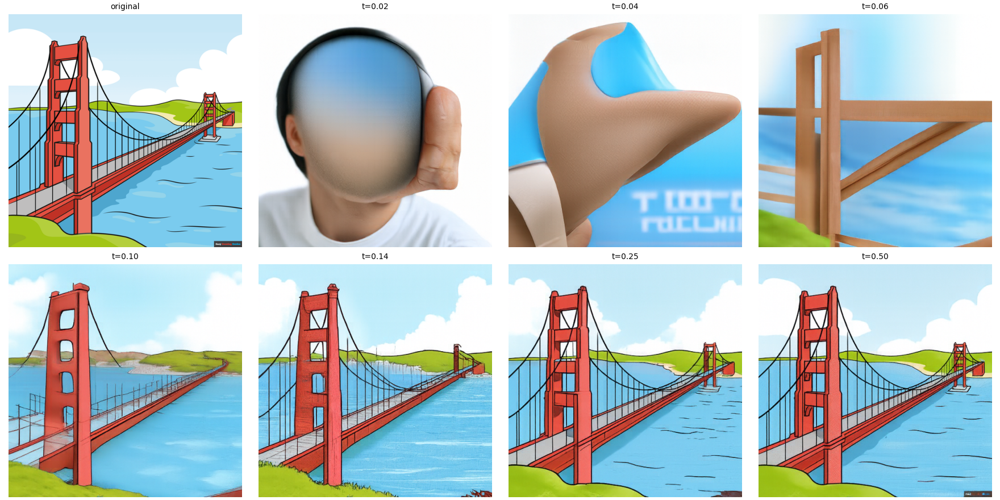
Observations (Golden Gate Bridge): At low timesteps ($t_{\text{start}} = 0.02$ and $0.04$), the severe noise variance obscures the bridge geometry completely, leading the model to hallucinate abstract human head and hand forms. By $t_{\text{start}} = 0.06$, the model interprets the red structural lines as wooden fencing. At $t_{\text{start}} = 0.10$ and $0.14$, the red suspension towers and cabling emerge in realistic photographic detail. By $t_{\text{start}} \ge 0.25$, the complete vector illustration style is accurately recovered.
Hand-Drawn Image 1: Burger Drawing
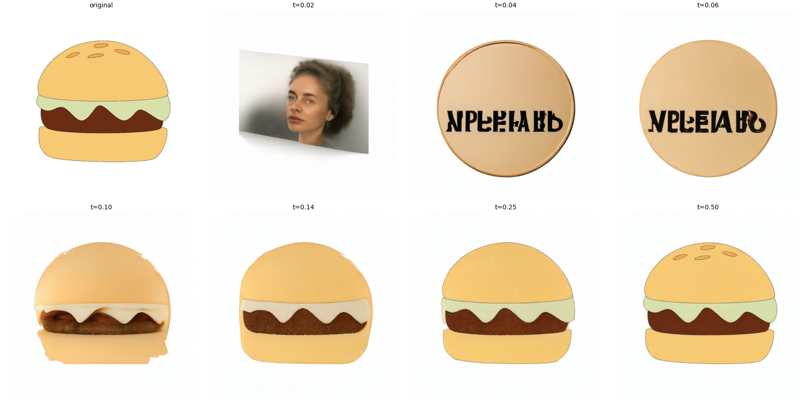
Observations (Burger Drawing): At $t_{\text{start}} = 0.02$, the noise destroys the doodle structure, yielding an unrelated human portrait. At $t_{\text{start}} = 0.04$ and $0.06$, the circular bun outline is interpreted as a round coin or stamped disc with pseudo-text. By $t_{\text{start}} = 0.10$, the model maps the horizontal layers onto a realistic, 3D-shaded hamburger with realistic bun contours and melted cheese textures. At $t_{\text{start}} \ge 0.25$, the output converges back to the original 2D flat doodle.
Hand-Drawn Image 2: Ice Cream Cone Drawing
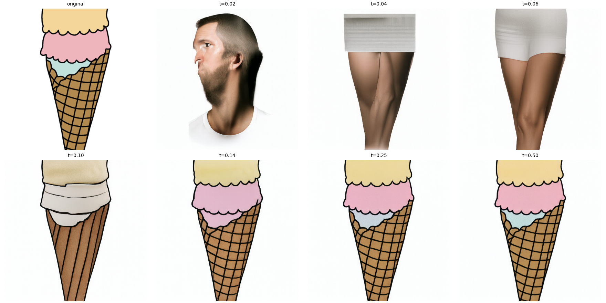
Observations (Ice Cream Cone Drawing): At $t_{\text{start}} = 0.02$ to $0.06$, the vertical V-shaped cone outline causes the flow model to hallucinate human legs and torso figures. By $t_{\text{start}} = 0.10$, the sampler correctly recognizes the structural geometry, projecting the sketch into a realistic 3D soft-serve ice cream cone with realistic waffle textures and shaded cream scoops. By $t_{\text{start}} \ge 0.25$, the flat, multi-colored cartoon drawing is fully preserved.
3.2 Text-Guided Image Editing
In Section 3.1, I projected noisy images back onto the natural image manifold using the generic prompt "a high quality photo". Here, I extend this pipeline to perform targeted text-guided image editing. By replacing the generic prompt embedding $c$ with a specific text prompt describing a desired transformation, the flow model is guided to hallucinate new visual content aligned with the prompt while maintaining structural fidelity to the original input.
I evaluated the exact same seven starting timesteps $t_{\text{start}} \in \{0.02, 0.04, 0.06, 0.10, 0.14, 0.25, 0.50\}$ using Classifier-Free Guidance ($w = 7.0$, step size $h = 0.02$) across my three test images.
1. Campanile Edit: Stone Waterfall
Prompt: "a photograph of a stone waterfall flowing down a cliff"
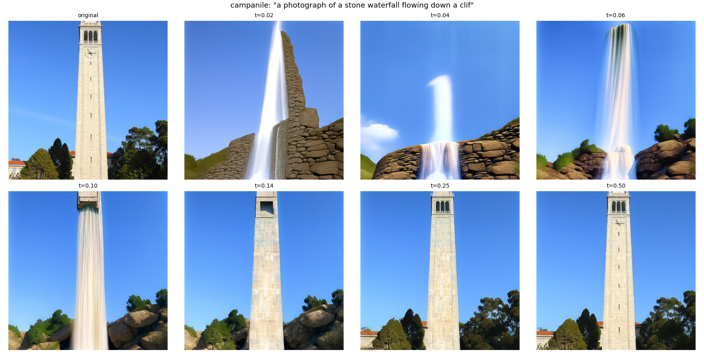
Observations (Campanile Waterfall): At low starting times ($t_{\text{start}} = 0.02$ to $0.06$), the prompt dominates completely, generating natural rock cliffs and cascading water. At intermediate times ($t_{\text{start}} = 0.10$ and $0.14$), a strong hybrid effect emerges: the tall, vertical geometry of the Campanile is preserved, but its stone surface transforms into cascading water flowing down vertical rock formations. By $t_{\text{start}} \ge 0.25$, the original architectural tower features overcome the prompt guidance.
2. Custom Image 1 (VLSB Library) Edit: Grand Piano Keys
Prompt: "a detailed, close-up photograph of grand piano keys"
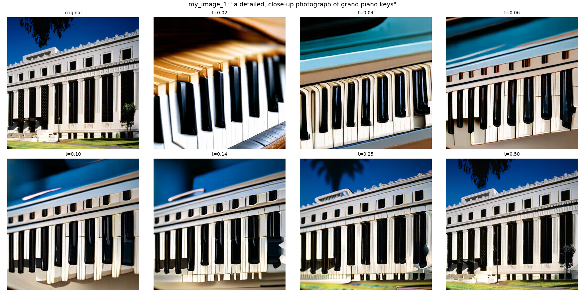
Observations (VLSB Library Piano Keys): The repeating vertical columns and dark window panes of the VLSB library map naturally onto the alternating black and white pattern of piano keys. At $t_{\text{start}} = 0.02$ to $0.06$, the model generates realistic piano keyboards in close-up perspective. At $t_{\text{start}} = 0.10$ and $0.14$, the vertical library columns are reinterpreted directly as ivory keys and black sharps. At $t_{\text{start}} \ge 0.25$, the structural constraints of the building prevail over the piano prompt.
3. Custom Image 2 (Pumpkin) Edit: Fiery Orange Sun in Space
Prompt: "a photograph of a fiery, orange sun in space"
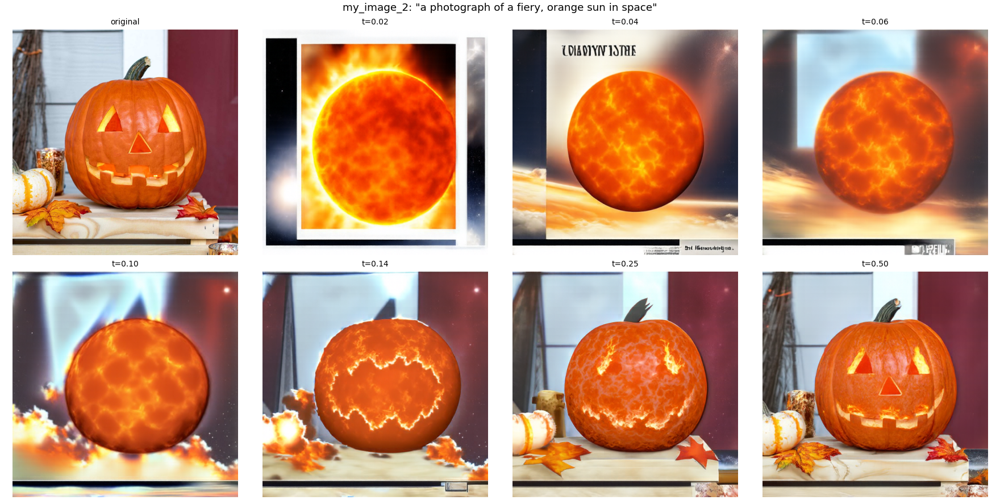
Observations (Pumpkin Fiery Sun): The round orange shape and internal glow of the Jack-o'-lantern serve as an ideal structural anchor for a celestial body. At low timesteps ($t_{\text{start}} = 0.02$ to $0.06$), the model produces a blazing solar orb surrounded by cosmic dark space. At $t_{\text{start}} = 0.10$ and $0.14$, the pumpkin retains its circular silhouette and warm color palette, but its surface glows with turbulent solar flares instead of carved facial features. By $t_{\text{start}} \ge 0.25$, the jack-o'-lantern's carved eyes, mouth, and indoor background reappear.
3.3 Visual Anagrams
To generate optical illusions with flow models, I implemented Visual Anagrams. A visual anagram is a single image that depicts one scene when viewed upright, but reveals an entirely different subject when rotated $180^\circ$ upside down.
To achieve this, at each Euler step $t$, I evaluate two CFG velocity predictions simultaneously:
- I predict velocity $v_1$ on the upright image state $x_t$ using prompt embedding $c_1$.
- I rotate $x_t$ by $180^\circ$ using transformation $R(x_t)$, predict velocity $v_2$ on the upside-down state using prompt embedding $c_2$, and rotate the velocity tensor back upright using $R^{-1}(v_2)$.
I then average the two velocity estimates to update $x_t$ in the direction that satisfies both prompt constraints simultaneously:
def visual_anagrams(x_start, prompt1_embed, prompt2_embed, step_size=0.02, w=7.0):
x = x_start
num_steps = int(1.0 / step_size)
for i in range(num_steps):
t = i * step_size
# Upright prediction
v1 = cfg_velocity(x, t, prompt1_embed, w)
# Rotated 180 prediction
x_rot = torch.flip(x, dims=[-2, -1])
v2_rot = cfg_velocity(x_rot, t, prompt2_embed, w)
v2 = torch.flip(v2_rot, dims=[-2, -1])
# Average velocity vector and step forward
v_avg = 0.5 * (v1 + v2)
x = x + step_size * v_avg
return xIllusion 1: Old Man & Campfire

Observations (Illusion 1): When viewed upright, the image depicts a textured oil painting of an old man's face with warm highlights along the forehead and nose. When rotated $180^\circ$ upside down, the bright forehead highlight transforms into a glowing campfire, while the facial folds and beard reinterpret as figures gathered around the fire in the dark.
Illusion 2: Snowy Village & Horse

Observations (Illusion 2): In the upright orientation, the lithograph renders a snowy mountain village with wooden cabins and steep peaked roofs in the foreground. Flipping the canvas $180^\circ$ reveals a horse, where the cabin rooftops transform into the horse's legs and body contours, and the mountain ridge becomes the horse's neck and head.
1.1 & 1.2 Denoising UNet Architecture and Noising Process
To build a single-step denoiser, I implemented a UNet architecture featuring convolutional downsampling and upsampling blocks with skip connections to preserve high-frequency spatial features. Given a clean MNIST image $x_0 \in \mathbb{R}^{1 \times 28 \times 28}$, I generated training samples $x$ at varying noise levels $\sigma$ according to the additive Gaussian noise process:
I visualized the forward noising process across noise levels $\sigma \in \{0.0, 0.2, 0.4, 0.5, 0.6, 0.8, 1.0\}$ on a clean digit 6 sample:
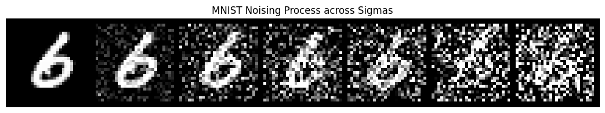
1.2.1 Single-Step UNet Training & Denoising Results
I trained the unconditional UNet (hidden channel dimension $D = 128$) to perform single-step denoising on noisy images $x = x_0 + \sigma \epsilon$ with fixed noise level $\sigma = 0.5$. The model was optimized using Adam ($\text{learning rate} = 10^{-4}$) over $5$ epochs on the MNIST dataset using batch size $256$ under an $L_2$ reconstruction loss:
Noise was applied dynamically per mini-batch during data loading to prevent overfitting and improve model generalization.
Training Loss Curve
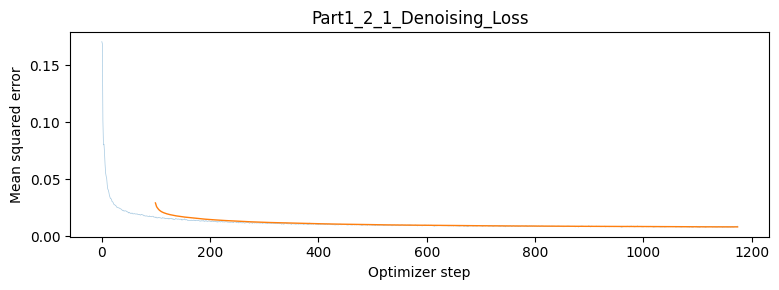
Test Set Denoising Visualizations ($\sigma = 0.5$)
I evaluated the trained model on test set digits at noise level $\sigma = 0.5$ after Epoch 1 and Epoch 5:
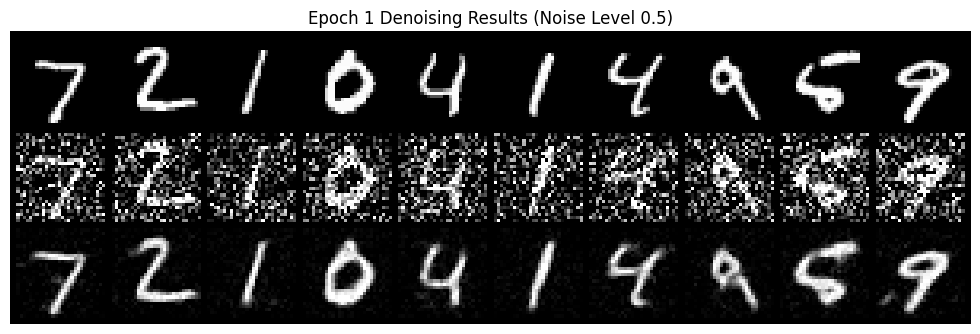
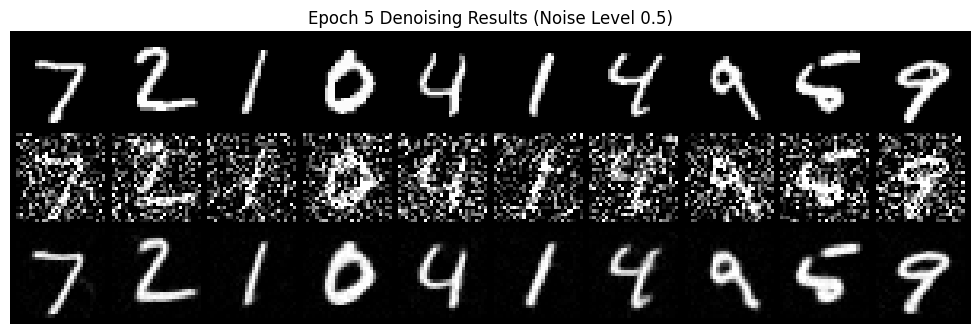
Discussion & Findings: By Epoch 1, the network learns to suppress high-frequency background noise and recover basic digit contours. By Epoch 5, the loss curve asymptotes near $0.008$, and the reconstructed test digits exhibit much cleaner stroke boundaries, sharp contrast, and accurate stroke completion even when heavily corrupted at $\sigma = 0.5$.
1.2.2 Out-of-Distribution (OOD) Testing
Because the single-step UNet was trained exclusively on MNIST digits noised at a fixed level $\sigma = 0.5$, I evaluated how robustly the trained model generalizes when tested on out-of-distribution (OOD) noise levels $\sigma \in \{0.0, 0.2, 0.4, 0.5, 0.6, 0.8, 1.0\}$.
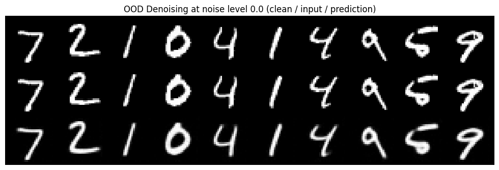
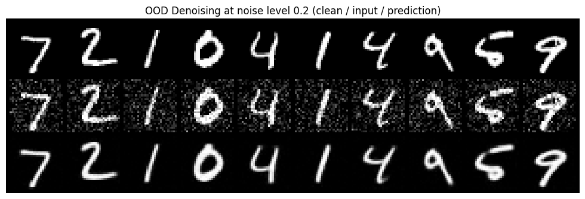
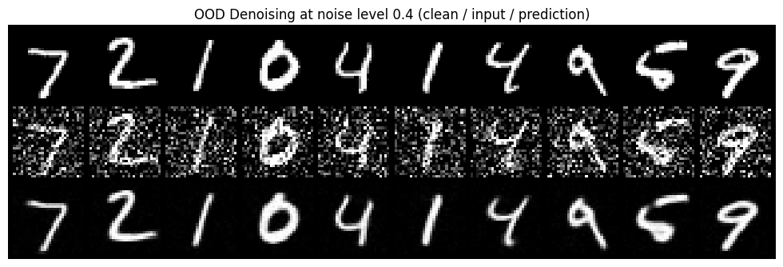
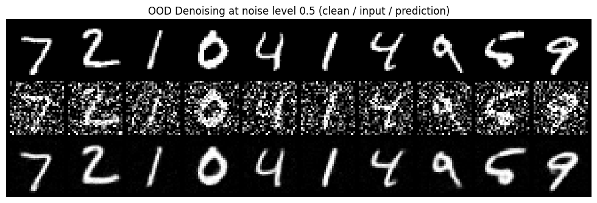
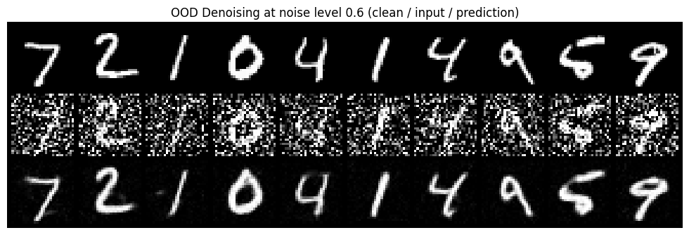
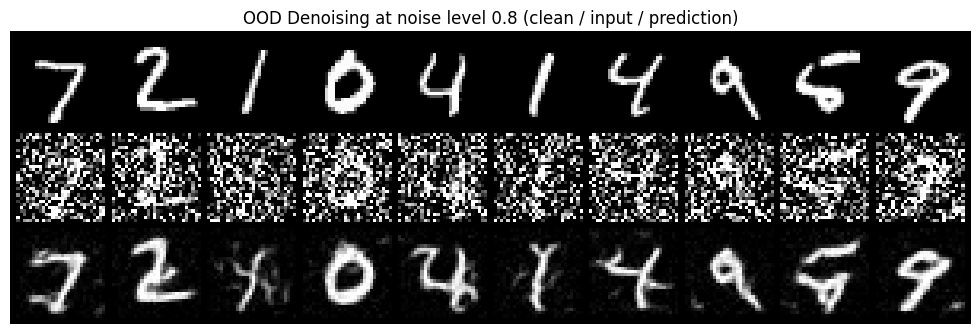
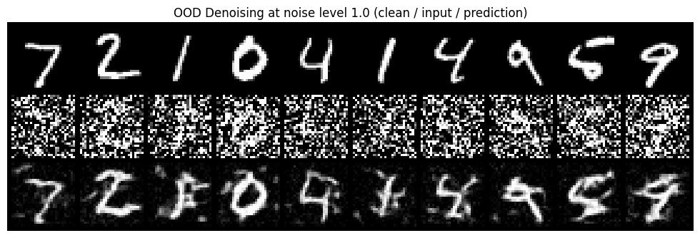
Discussion & Generalization Analysis:
- In-Distribution Performance ($\sigma = 0.5$): The model achieves high reconstruction quality, cleanly recovering digit shapes and removing stroke background noise.
- Lower Noise Levels ($\sigma \le 0.4$): At $\sigma = 0.0, 0.2,$ and $0.4$, the model generalizes well and outputs clear digits, though it applies a mild smoothing effect even on completely clean inputs ($\sigma = 0.0$).
- Higher Out-of-Distribution Noise ($\sigma \ge 0.8$): As $\sigma$ increases significantly above $0.5$, performance degrades rapidly. At $\sigma = 0.8$ and $1.0$, extreme noise corruption breaks structural digit assumptions, causing the model to output blurry, hallucinated, or malformed stroke artifacts.
1.2.3 Denoising Pure Noise
To explore whether a single-step denoiser can act as a generative model, I trained the UNet architecture directly on pure Gaussian noise inputs $z \sim \mathcal{N}(0, I)$ to map them to clean target MNIST digits $x_0$. The model was trained over 5 epochs using the same $L_2$ loss objective:
Training Loss Curve
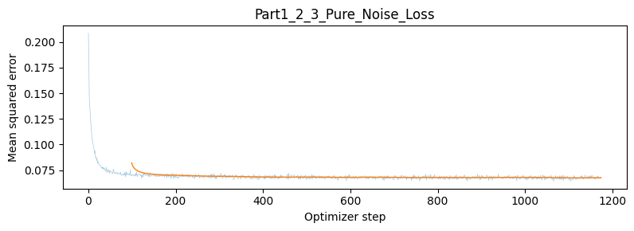
Test Set Denoising Visualizations (Pure Noise Inputs)
I evaluated the trained pure noise denoiser after Epoch 1 and Epoch 5:
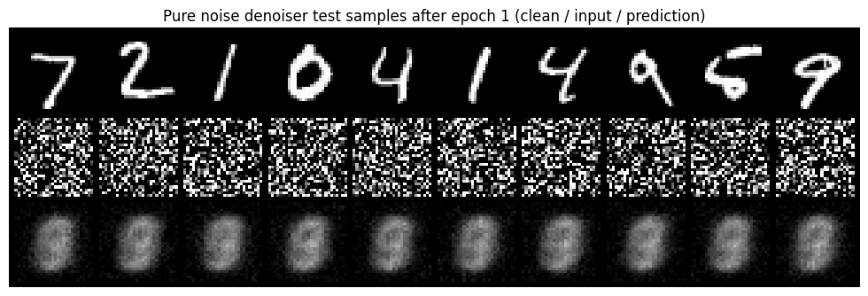
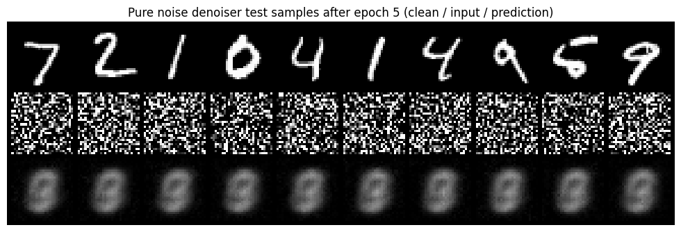
Observed Patterns & Mathematical Explanation:
- Observed Pattern: Regardless of the input noise vector $z$ or the target digit $x_0$, the model outputs an identical, blurry, composite digit artifact resembling a superimposition of an '8' or '0'.
- Relationship to Training Digits (Centroid Property): When optimizing an $L_2$ Mean Squared Error loss over pure unconditioned Gaussian noise $z$, the optimal prediction $\hat{x}$ that minimizes expected squared distance is the conditional expectation: $$\hat{x} = \mathbb{E}[x_0 \mid z] \approx \mathbb{E}[x_0]$$ Because pure noise $z$ carries zero spatial or semantic signal regarding which specific digit class (0–9) was paired with it, the network learns to output the global pixel-wise mean (the "centroid") across the entire MNIST training set.
- Conclusion: A single-step unconditioned network cannot map pure noise to diverse, sharp individual digits. This limitation motivates multi-step iterative flow models and conditioned sampling architectures.
Part 2: Training a Flow Matching Model
2.1 Time-Conditioned UNet Architecture
To overcome the single-step averaging limitation, I trained an iterative flow matching UNet model. In flow matching, intermediate noisy samples $x_t$ are constructed via linear interpolation between pure Gaussian noise $x_0 \sim \mathcal{N}(0, I)$ and clean data $x_1$:
The target vector field (velocity flow) connecting noise $x_0$ to clean data $x_1$ is constant over time:
I injected the scalar timestep conditioning signal $t \in [0, 1]$ into the UNet using fully-connected blocks (FCBlock) to modulate intermediate channel feature maps via element-wise multiplication:
class FCBlock(nn.Module):
def __init__(self, in_features, out_features):
super().__init__()
self.block = nn.Sequential(
nn.Linear(in_features, out_features),
nn.GELU(),
nn.Linear(out_features, out_features)
)
def forward(self, x):
return self.block(x)2.2 & 2.3 Time-Conditioned UNet Training and Sampling
I trained the time-conditioned UNet (hidden channel dimension $D = 64$) over 10 epochs using batch size $64$. The model was optimized using Adam ($\text{initial learning rate} = 10^{-2}$) with an exponential learning rate scheduler ($\gamma = 0.1^{1/10} \approx 0.794$) under an $L_2$ flow matching loss:
Training Loss Curve
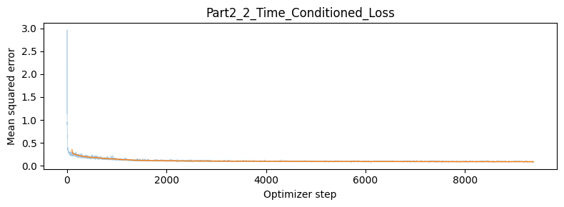
Iterative Generation Results Across Epochs
To generate images from pure noise $x_0$, I integrated the learned velocity field forward from $t = 0$ to $t = 1$ using Euler sampling ($N = 50$ integration steps, step size $\Delta t = 0.02$). Below are generated test samples after Epochs 1, 5, and 10:
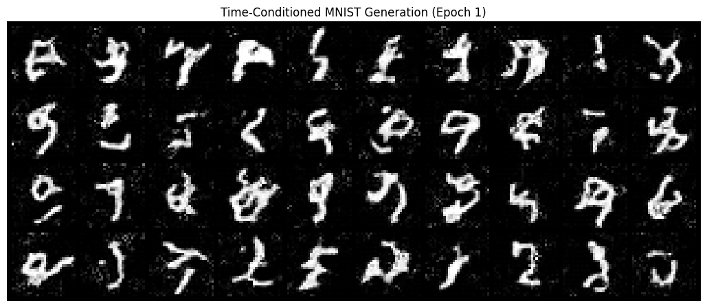
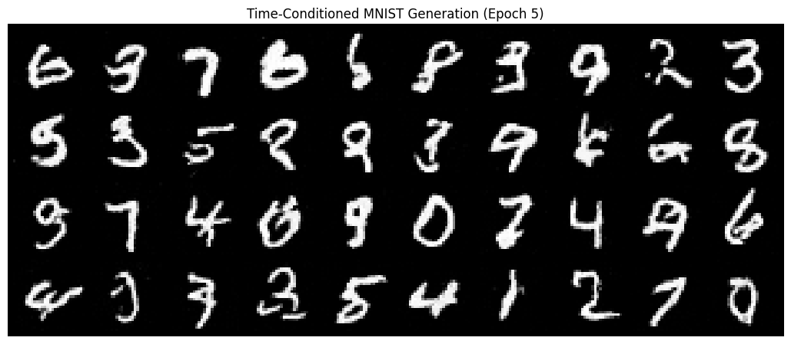
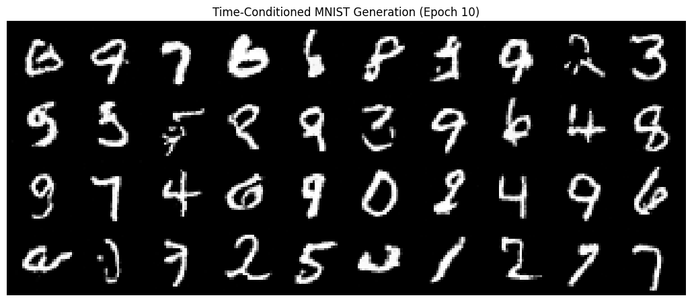
Discussion & Sampling Performance: At Epoch 1, the model only produces faint, disconnected stroke fragments. By Epoch 5 and Epoch 10, the iterative flow solver smoothly pushes random initial noise vectors toward distinct digit manifolds, yielding diverse, high-contrast, and recognizable handwritten numbers across classes 0–9.
2.4 & 2.5 Class-Conditioned Flow Matching UNet Training
To gain explicit control over digit generation and improve sample fidelity, I extended the UNet architecture by adding class-conditioning. Instead of relying solely on timestep $t$, the model is conditioned on both $t \in [0, 1]$ and a one-hot class vector $c \in \mathbb{R}^{10}$ representing digit labels 0–9.
I added two extra FCBlock layers for class embedding and combined the modulation signals across intermediate feature maps using affine scaling:
To enable Classifier-Free Guidance (CFG) during sampling, I implemented class dropout: with probability $p_{\text{uncond}} = 0.10$, the one-hot class vector $c$ is set to zero ($c = \mathbf{0}$), training the network to perform both conditional and unconditional flow prediction simultaneously.
# Class-conditioned feature modulation pseudocode
fc1_t, fc1_c = FCBlock(1, D), FCBlock(10, D)
fc2_t, fc2_c = FCBlock(1, D), FCBlock(10, D)
# Class dropout during training (10% chance)
if self.training and torch.rand(1).item() < 0.10:
c = torch.zeros_like(c)
t1, c1 = fc1_t(t), fc1_c(c)
t2, c2 = fc2_t(t), fc2_c(c)
# Modulate intermediate feature blocks
unflatten = c1 * unflatten + t1
up1 = c2 * up1 + t2Training Loss Comparison
I trained the class-conditioned UNet ($D = 64$, batch size $64$) over 10 epochs. To optimize performance, I compared two training configurations: an exponential learning rate scheduler ($\text{initial lr} = 10^{-2}, \gamma = 0.794$) versus a constant learning rate ($\text{lr} = 10^{-3}$).
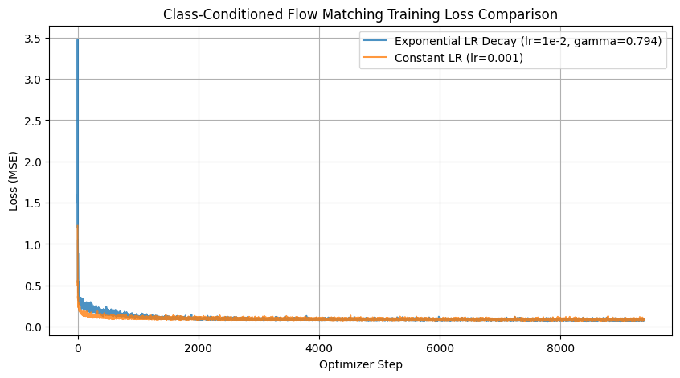
Discussion: Both training runs converge steadily to a low MSE loss ($\approx 0.08$). The exponential learning rate decay scheme exhibits a higher initial spike but rapidly stabilizes, achieving smooth convergence over the final epochs and ensuring robust joint learning of both class-conditional and unconditional flow fields.